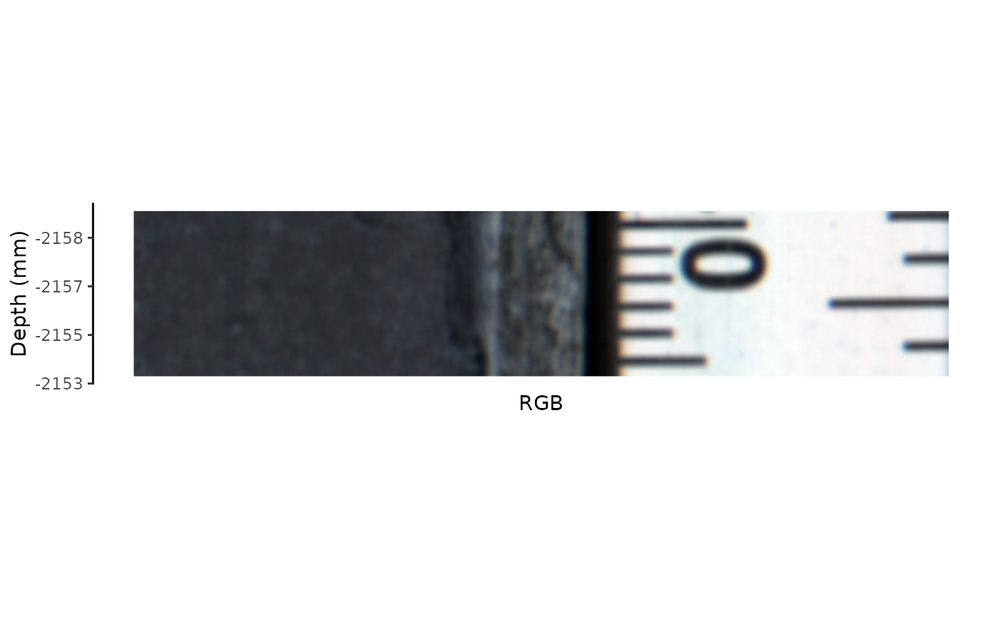
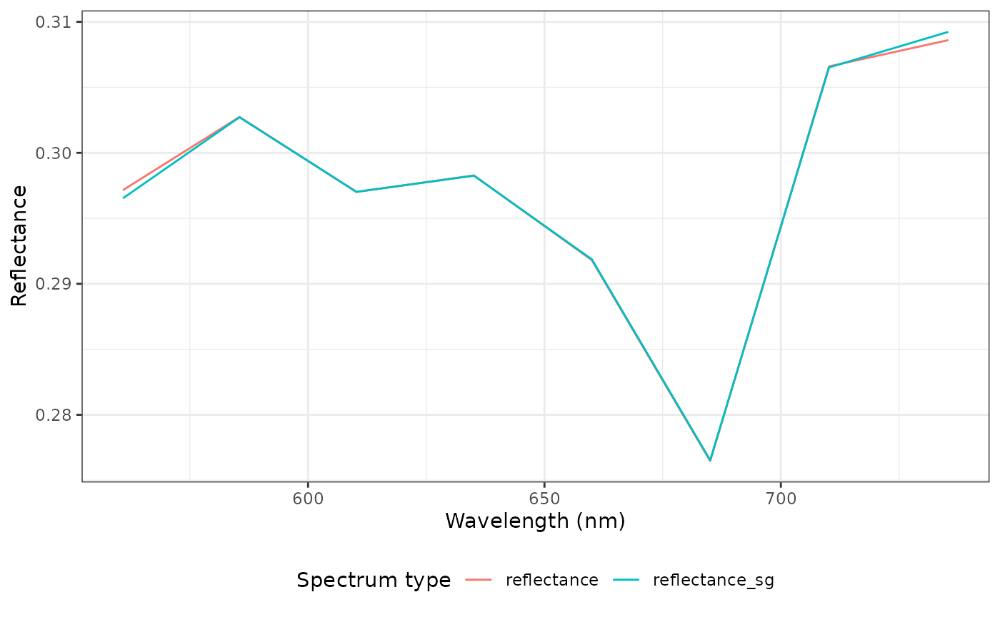
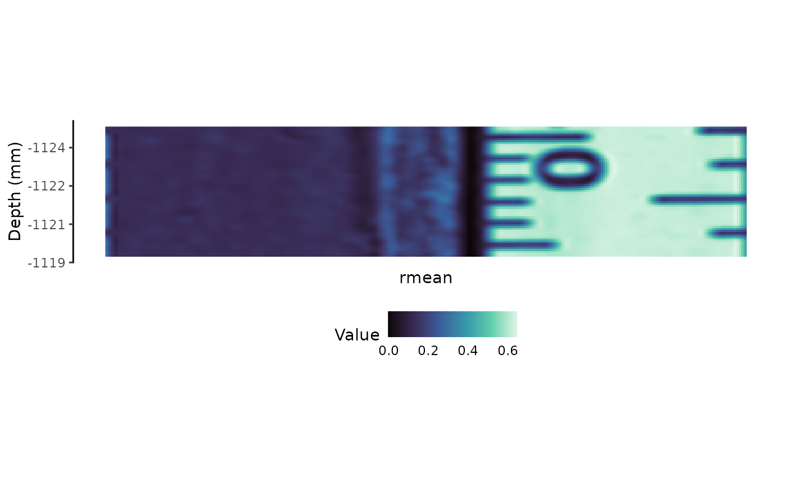
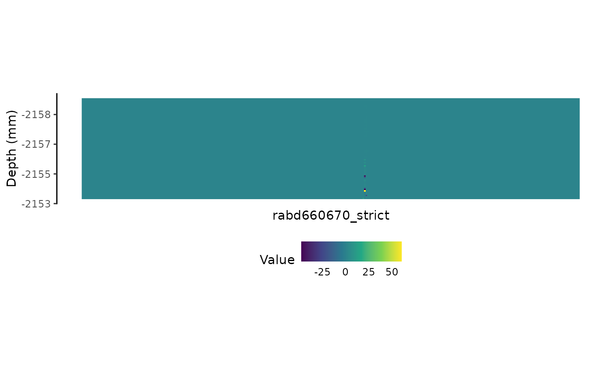
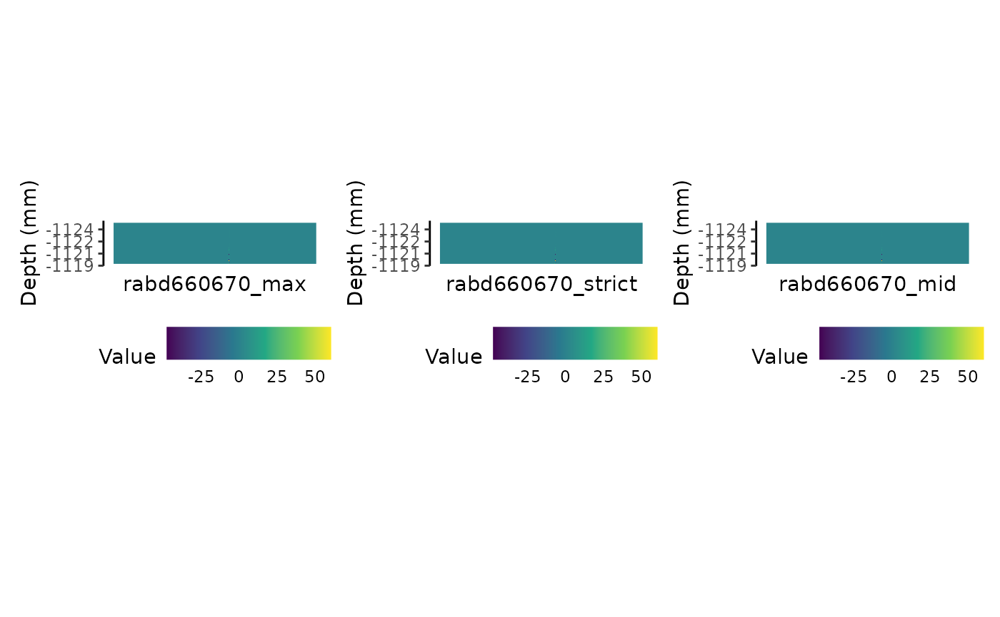
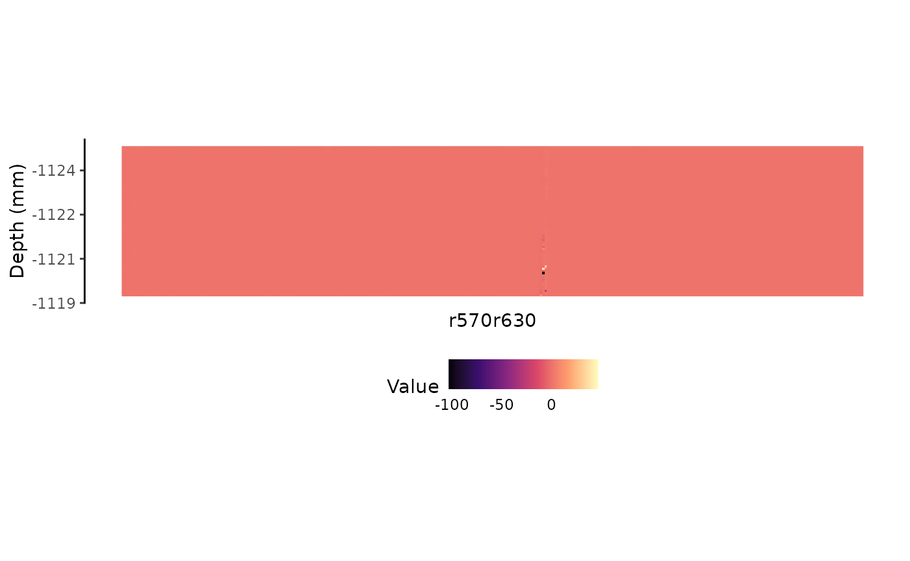
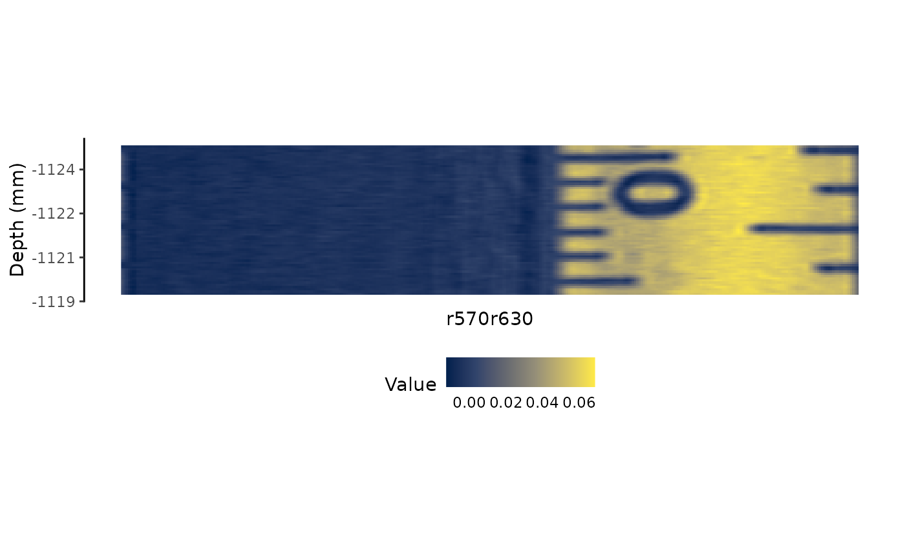

library(HSItools)
#> Warning: replacing previous import 'DT::dataTableOutput' by
#> 'shiny::dataTableOutput' when loading 'HSItools'
#> Warning: replacing previous import 'DT::renderDataTable' by
#> 'shiny::renderDataTable' when loading 'HSItools'
library(patchwork)
library(terra)
#> terra 1.7.71
#>
#> Attaching package: 'terra'
#> The following object is masked from 'package:patchwork':
#>
#> area
library(dplyr)
#>
#> Attaching package: 'dplyr'
#> The following objects are masked from 'package:terra':
#>
#> intersect, union
#> The following objects are masked from 'package:stats':
#>
#> filter, lag
#> The following objects are masked from 'package:base':
#>
#> intersect, setdiff, setequal, union
library(tidyr)
#>
#> Attaching package: 'tidyr'
#> The following object is masked from 'package:terra':
#>
#> extract
library(ggplot2)Here, we present a basic workflow for a single core. It is assumed
that the output of the run_core() function is available and
stored on the disk.
We’re using some internal data here, substantially reducing spatial resolution.
Basic workflow
Typically at this point you are going to use the shiny app output of
the run_core() function stored in the *.rds file. Here, for
the vignette we recreate this output by hand. You can also produce these
files this way, without running shiny app.
# Load run_core() output
core <- list(
analysisOptions = list(
normalize = TRUE,
integration = FALSE,
proxies = 'rabd_b660b670'
),
layers = c(560.84, 585.49, 610.24, 635.08, 660.02, 685.05, 710.19, 735.41),
cropImage = c(948, 1283, 13143, 13211),
simpleRGB = list(ext = c(xmin = 88, xmax = 1287, ymin = 13132, ymax = 13217)),
rasterPaths = list(
capture = fs::path_package(package = "HSItools", "extdata/CORE_XYZ/CORE_XYZ.tif"),
darkref = fs::path_package(package = "HSItools", "extdata/CORE_XYZ/DARKREF_CORE_XYZ.tif"),
whiteref = fs::path_package(package = "HSItools", "extdata/CORE_XYZ/WHITEREF_CORE_XYZ.tif")
),
directory = fs::path_package(package = "HSItools", "extdata/CORE_XYZ"),
analysisRegions = NULL,
distances = list(
startCore = c(x1 = 1, x2 = 1, y1 = 1, y2 = 1),
endCore = c(x1 = 1, x2 = 1, y1 = 1, y2 = 1),
startScale = c(x = 1159, y = 13204),
endScale = c(x = 1164, y = 13148),
coreDist = 56,
scaleDist = 61,
scaleDistmm = 5,
pixelRatio = 0.08196721
)
)Preprocessing
Normalization
Before any spectral indices and properties are calculated, normalizing the data and expressing it as a reflectance is necessary.
# Here we use run_core() output, so further function arguments are filled automatically.
# Output is written to the file.
reflectance <- core |>
prepare_core()
#> |---------|---------|---------|---------|========================================= |---------|---------|---------|---------|========================================= |---------|---------|---------|---------|========================================= |---------|---------|---------|---------|========================================= At this stage, we can plot the RGB preview. Our example file has only eight random wavelengths, so it is impossible to plot true RGB. Instead, we use the first, middle, and last available layer. Here it results in somewhat gray image.
plot_raster_rgb(
reflectance,
calibration = pixel_to_distance(core))
Spectral smoothing
Applying spectral smoothing, such as the Savitzky-Golay spectral filter, is a good idea. Spurious, random peaks and through do not influence the calculation results.
reflectance_smooth <- reflectance |>
# Specify the file extension
filter_savgol()
#> |---------|---------|---------|---------|========================================= We can plot the RGB preview at this stage, too.
plot_raster_rgb(
reflectance_smooth,
calibration = pixel_to_distance(core))Peek into spectra
# Spectral profile from the entire ROI
reflectance_sp <- reflectance |>
# Use HSItools function to extract the profile
extract_spectral_profile() |>
# Pivot longer so for plotting
tidyr::pivot_longer(
dplyr::everything(),
names_to = "band",
values_to = "reflectance",
names_transform = readr::parse_number)
# Peek into data
head(reflectance_sp)
#> # A tibble: 6 × 2
#> band reflectance
#> <dbl> <dbl>
#> 1 561. 0.297
#> 2 585. 0.303
#> 3 610. 0.297
#> 4 635. 0.298
#> 5 660. 0.292
#> 6 685. 0.276
# Spectral profile from the entire ROI
reflectance_smooth_sp <- reflectance_smooth |>
# Use HSItools function to extract the profile
extract_spectral_profile() |>
# Pivot longer so for plotting
tidyr::pivot_longer(
dplyr::everything(),
names_to = "band",
values_to = "reflectance_sg",
names_transform = readr::parse_number)
# Peek into data
head(reflectance_smooth_sp)
#> # A tibble: 6 × 2
#> band reflectance_sg
#> <dbl> <dbl>
#> 1 561. 0.297
#> 2 585. 0.303
#> 3 610. 0.297
#> 4 635. 0.298
#> 5 660. 0.292
#> 6 685. 0.277
# Plot both profiles data
sp_compare <- dplyr::left_join(
reflectance_sp,
reflectance_smooth_sp,
dplyr::join_by(band)) |>
tidyr::pivot_longer(
-band,
names_to = "type",
values_to = "reflectance") |>
ggplot2::ggplot(
aes(
band,
reflectance,
color = type)) +
ggplot2::geom_line() +
ggplot2::scale_x_continuous(
breaks = scales::pretty_breaks()) +
ggplot2::labs(
x = "Wavelength (nm)",
y = "Reflectance",
color = "Spectrum type") +
ggplot2::theme_bw() +
ggplot2::theme(legend.position = "bottom")
# Print
sp_compare
Continuum removal
We can process our data further by removing the continuum, which follows the rule of dividing the spectrum by its bounding box. This way, the spectrum becomes flatter.
# Calculate reflectance with removed continuum
# Use the smoothed spectrum
reflectance_cr <- reflectance_smooth |>
remove_continuum()
#> |---------|---------|---------|---------|========================================= Index calculation
At this point, it is OK to calculate selected indices or proxies. Additionally, we provide calibration so depths are displayed as mm rather than pixels (mind odd values).
Mean reflectance (Rmean)
rmean <- reflectance_smooth |>
calculate_rmean()
plot_rmean <- rmean |>
plot_raster_proxy(
hsi_index = names(rmean),
palette = "mako",
calibration = pixel_to_distance(core))
# Print
plot_rmean
Relative Absorption Band Depth (RABD).
The RABD calculation has variations, but the results are generally not drastically different. Let’s calculate one of the most common indices to estimate the total chloropigments-a: RABD660:670.
You can use predefined values or provide them manually. Let’s calculate three different flavors.
The name of the output informs you about the calculated proxy and additional modifications to the reflectance file; here, we see that it was calculated with Savitzky-Golay smoothed reflectance.
Variant 1: max
In this variant, a minimum reflectance is found in the trough for each pixeland flexibly used for calculations.
rabd660670max <- reflectance_smooth |>
# Calculate max variant
calculate_rabd(
edges = proxies$rabd_b660b670$edges,
trough = proxies$rabd_b660b670$trough,
rabd_name = proxies$rabd_b660b670$proxy_name,
rabd_type = "max")
#> |---------|---------|---------|---------|========================================= Plot. Hyperspectral imaging data is most interesing when visualized.
We use viridis palettes. There is not much to see, and
values are unrealistic because the number of layers is dramatically
reduced.
# Prepare the plot
plot_rabd660670max <- rabd660670max |>
plot_raster_proxy(
hsi_index = names(rabd660670max),
palette = "viridis",
calibration = pixel_to_distance(core))
# Print
plot_rabd660670maxVariant 2: strict
This classic variant supplies a specific wavelength to calculate RABD for every pixel.
rabd665 <- reflectance_smooth |>
# Calculate max variant
calculate_rabd(
edges = proxies$rabd_b660b670$edges,
trough = 665,
rabd_name = proxies$rabd_b660b670$proxy_name,
rabd_type = "strict")
#> |---------|---------|---------|---------|=========================================
# Prepare the plot
plot_rabd665 <- rabd665 |>
plot_raster_proxy(
hsi_index = names(rabd665),
palette = "viridis",
calibration = pixel_to_distance(core))
# Print
plot_rabd665
Variant 3: midpoint
This is variant 2 (strict), with the added shortcut of always finding the middle point between the through edges.
rabd660670mid <- reflectance_smooth |>
# Calculate max variant
calculate_rabd(
edges = proxies$rabd_b660b670$edges,
trough = proxies$rabd_b660b670$trough,
rabd_name = proxies$rabd_b660b670$proxy_name,
rabd_type = "mid")
#> |---------|---------|---------|---------|=========================================
# Prepare the plot
plot_rabd660670mid <- rabd660670mid |>
plot_raster_proxy(
hsi_index = names(rabd660670mid),
palette = "viridis",
calibration = pixel_to_distance(core))
# Print
plot_rabd660670midCompare
We can compare these three plots side by side. We’re using
patchwork.
plot_rabd660670max + plot_rabd665 + plot_rabd660670mid + patchwork::plot_layout(nrow = 1)
Similar, but not identical. As expected!
Band ratios
Another popular and straightforward indices are band ratios, where reflectance at the wavelength X is divided by reflectance at the wavelength Y.
plot_ratio570630 <- ratio_570630 |>
plot_raster_proxy(
hsi_index = names(ratio_570630),
palette = "magma",
calibration = pixel_to_distance(core))
plot_ratio570630
Band differences
difference_650675 <- reflectance_smooth |>
calculate_band_difference(
difference_name = proxies$diff_b650b675$proxy_name,
edges = proxies$diff_b650b675$edges)
plot_difference_650675 <- difference_650675 |>
plot_raster_proxy(
hsi_index = names(difference_650675),
palette = "cividis",
calibration = pixel_to_distance(core))
plot_difference_650675